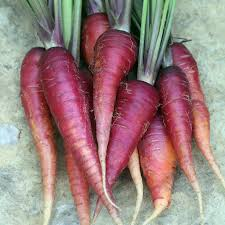

Hello, and welcome to Dhrumil's GitHub lesson. If you haven't already, please:
This is a pretend article about vegetables. Specifically, how long they are and what color they are. There are lots of vegetables in the world, and they are of various colors. They can be white, blue, or yellow; but there are no neon vegetables in nature. That is why this article is so important—to inform you about types of vegetables. Once you're done reading, you should be able to identify whether or not what you're eating is a vegetable.
This is a pretend article about vegetables. Specifically, how long they are and what color they are. There are lots of vegetables in the world, and they are of various colors. They can be white, blue, or yellow; but there are no neon vegetables in nature. That is why this article is so important—to inform you about types of vegetables. Once you're done reading, you should be able to identify whether or not what you're eating is a vegetable.
As you can see in the table above, my shopping list has vegetables of various colors.
First, let's talk about potatoes. Your average potato is 6 inches long and 5 inches wide. Of course, there are various types of potatoes, but if you took every single potato of every size, shape, and variety, they are roughly that size on average. Additionally, most potatoes are brown. Some are white, and some are yellow; some are sweet, and some are mellow. But potatoes are potatoes, and on average, they are brown.
Now let's talk about gym socks. Gym socks are very smelly. So smelly, in fact, that they make your feet smell bad. Actually, I think it is the other way around. Feet imbue the smell into the socks; the socks are not actually the source of the smell. Did you know that? Go figure!
Now carrots, those are orange. Did you know that carrots actually used to be purple? Yeah, I didn't know that either. But after I read the article I just linked to, I learned it. Then, I knew it! What an interesting fact. I didn't personally unearth that fact, but I linked to it from another website. I also don't unearth carrots; I buy them at the grocery store.
In conclusion, gym socks are not vegetables, carrots were once purple, and now you know the average length of a potato. However, you still don’t know the full distribution of potato lengths or how their lengths vary by type. Hopefully, this article has helped you better determine whether or not what you’re eating is a vegetable.
If you're reading this, you've reached the end of the article and probably lost a few brain cells. Now we, a group of professional newspeople, are going to work on improving it. Kind of like a reverse mad-libs. I hope this website helped explain some of the class concepts! Goodbye.